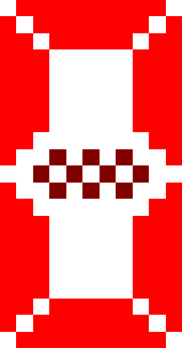

Minesweeper


The engine utilizes a recursive QuadTree to facilitate sub-ms spatial queries across grid surfaces exceeding 1,000,000 nodes.
Recursive Spatial Decomposition Strategy
By decomposing the 2D plane into four quadrants recursively, retrieval complexity is reduced from $O(N)$ to $O(\log N)$. This ensures that only visible grid sectors are emitted to the rendering pipeline, maintaining high frame consistency.
Author: Amey Thakur
Evaluation of the engine's core algorithms under high-density game states.
| Operation | Complexity | Mechanism |
|---|---|---|
| Cell Retrieval | $O(\log N)$ | QuadTree spatial search |
| State Lookup | $O(1)$ | Bit-packed bitmasks |
| Solvability | $O(2^K)$ | CSP Backtracking (K=frontier) |
Note: Space complexity scales linearly $O(M)$ where M is the total cell count, minimized via TypedArray allocations.
Author: Amey Thakur
Same seed + same settings = same board.
This project is a technical demonstration of high-performance board generation and spatial management.
Uint32Array bitmasks for raw state
tracking.
Optimized for CPU cache locality and minimal GC pressure.
Author: Amey Thakur
Source: https://github.com/Amey-Thakur/MINESWEEPER
The goal of the game is to uncover all the squares that do not contain mines.
If you reveal a mine, the game is over!
Computer Engineer & Research Scholar